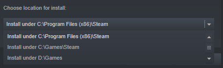

Initial Setup
In this step, we will do a clean installation and configuration of the game, which is required for the guide.
If you run into any issues at any point in the guide, please be sure to check the FAQ.
If your issue is not addressed there, join the Discord for support.
Recommended Installation Location
A clean installation is not only required to get rid of any potential leftover mod files, but also to make sure the game is installed in a safe location. Here is what you need to know when choosing where to install your game:
- Avoid any default Windows folders: This includes but is not limited to
C:\Program Files,C:\Program Files x86, yourDesktop, and yourDocumentsfolders. This is due to Windows UAC (or User Account Control), which heavily monitors and protects these folders. This can cause many issues with the game and any modding tools. As an example of a safe location, my Steam directory isC:\Games\Steam. - Install on an SSD if possible: Having the game on an SSD will drastically improve load times and decrease stuttering.
If you do not have the game installed yet, skip this step.As the game is available on both Steam and GOG, there are separate instructions here for each version. You obviously only need to follow the directions for the version you have.
- Open Steam and go to your Library.
- Find Fallout: New Vegas in the list.
- Right-click on it and select Manage -> Uninstall.
- Navigate to
Steam\steamapps\common\and, if present, delete the Fallout New Vegas folder. - Navigate to
Documents\My Gamesand delete the FalloutNV folder.
- Open GOG and go to your Library.
- Find Fallout: New Vegas in the list.
- Right-click on it and select Manage Installation -> Uninstall.
- Uninstall through GOG Galaxy.
- If you used offline installers then run the unins000.exe file in the game's Root folder.
It is strongly recommended to install the game outside of any default Windows folders (Such as Program Files (x86)), as the the strict Windows file protections of these folders can break certain mods/tools. Instead, we will use a tool called Steam Library Setup Tool to create a new Steam library folder outside of any default Windows folders. If you already have Steam installed outside of any default windows folders then skip this step and simply install the game to your custom Steam library.
- Completely exit out of Steam using Task Manager or System Tray.
- Download the steam_library_setup_tool-3.2.exe file from here.
- Once downloaded, run the file and add a new entry by clicking Add Row.
- Type the chosen path under Path, e.g.
C:\Games\Steam - Click Accept then Yes if prompted to create a new folder.
- The tool will ask to exit, select OK.
- Open Steam and go to your Library.
- Find Fallout: New Vegas in the list and select Install.
- Under Choose location for install:, select the library folder created with the tool. 

If you still do not see your new library, restart your PC.
- Select Next then wait for the install to finish.
- Open GOG and go to your Library.
- Find Fallout: New Vegas in the list and select Install.
- Set the Install to location to a location of your choice.
- It is recommended to install the game outside of any default Windows folders (e.g.,
Program Files x86).
Key Terminology
Now that the game is installed, there are two folders from it that will be referred to in the guide often:
- Root folder: Where the game is installed.
- For Steam:
Steam\steamapps\common\Fallout New Vegas - For GOG:
GOG Galaxy\Games\Fallout New Vegas(Unless you manually changed the installation path). - Data folder: Where all of the game's assets are located.
- For Steam:
Steam\steamapps\common\Fallout New Vegas\Data - For GOG:
GOG Galaxy\Games\Fallout New Vegas\Data
Enabling File Extensions
By default, Windows Explorer will not show file extensions (such as .exe, .dll, or .esp). These extensions are very important when going through the guide, so it is highly recommended to enable file extensions:
- Open Windows Explorer.
- Select the View tab at the top.
- Enable File name extensions in the Show section.

- Run the game from Steam/GOG Galaxy, or through FalloutNVLauncher.exe in the game files if you are using an offline copy.
- Click OK to both pop-ups that say Detecting Video Hardware.
- If there aren't any pop-ups, navigate to
Documents\My Games\FalloutNVand delete all the files ending in .INI then retry. - Select Options then select the Ultra preset option.
- If you have a lower-end PC, or want to squeeze as much performance out of the game as possible, you can select the High preset instead. It offers pretty similar visual quality for a decent performance improvement, especially on older hardware. You can set it to an even lower preset if you want, but at that point you are only gaining diminishing returns on performance. Another great way to improve performance without drastically changing the game's visuals is by disabling shadows. New Vegas does not have real dynamic object shadows (Like in Skyrim or Fallout 4), only actor shadows. Despite having a minor visual improvement, they can have a large performance impact if there are many NPCs in one area.
- Set the Resolution option to your preference (The launcher usually does not set it to your monitor's max resolution).
- Click OK then Exit.